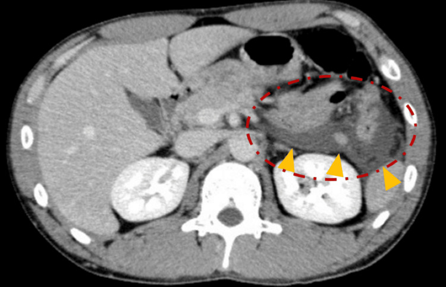
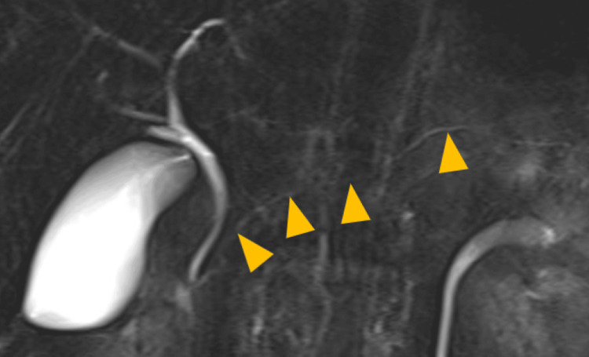

6136 — Viêm tụy cấp do thuốc ở trẻ: thời gian tiềm tàng, bảng Badalov và quyết định ngừng/thử lại
Tags: pattern:viem-tuy pattern:hoai-tu-tuy pattern:tu-dich-quanh-tuy vung:tuy vung:o-bung protocol:SA-bung protocol:CT-bung-co-can-quang protocol:MRI-MRCP score:INSPPIRE-2018 score:Badalov-2008 score:Naranjo incidentaloma:khong
Mức chắc chắn (certainty): tổng hợp y văn (literature synthesis) — ghép ca nguyên văn có ảnh (thư 14 tuổi dùng valproate, Ann Indian Acad Neurol 2026, PMC13349259; ca 20 tuổi dùng mesalazine, Cureus 2025, PMC12356708), đoàn hệ 133 trẻ (Children 2026, PMC13024780), 352 trẻ ALL dùng asparaginase (Front Pharmacol 2026, PMC13226028), tổng quan DIP (World J Gastroenterol 2020, PMC7304112), tổng quan hệ thống 713 ca (PLoS One 2020, PMC7164626) và ca paroxetine có tái dùng thuốc dương tính (Front Med 2026, PMC12813211).
Câu hỏi thực hành: bé gái 14 tuổi, động kinh, dùng valproate 1.600 mg/ngày (40 mg/kg/ngày) đã 8 tháng; đau thượng vị lan sau lưng 1 ngày, nôn, amylase 703 U/L, lipase 1.492 U/L, tiểu cầu 69.000/µL. Siêu âm: tụy không đồng nhất, dịch quanh tụy, dịch ổ bụng. Bác sĩ hỏi: có phải do thuốc không, nồng độ valproate bình thường thì loại trừ được không, và sau này có được dùng lại valproate? Bài chốt bốn việc: (1) thuốc là nguyên nhân đứng thứ ba của viêm tụy cấp, chiếm 0,3–1,4% người lớn nhưng tới 15% trẻ trong một đoàn hệ gần đây — chẩn đoán là LOẠI TRỪ, không có hình ảnh đặc hiệu; (2) thời gian tiềm tàng là chốt lập luận: < 24 giờ (phản ứng quá mẫn) khác vài tuần–vài tháng (độc chất/chuyển hóa), và nồng độ thuốc trong "khoảng trị liệu" KHÔNG loại trừ được; (3) phân loại Badalov I–IV + thang Naranjo quyết định mức chắc chắn, không phải một lần tăng men tụy; (4) nguyên tắc xử trí: ngừng thuốc nghi ngờ + điều trị nâng đỡ; thử lại thuốc chỉ khi thuốc không thể thay thế, sau khi hội chẩn, và phải có kế hoạch theo dõi men tụy — valproate và mesalazine hầu như KHÔNG dùng lại.
1. Tổng quan bệnh học – cơ chế hình ảnh: tại sao "tụy phù" không nói được thuốc nào
- Tần suất (số phải nhớ): thuốc gây 0,3–1,4% tổng số ca viêm tụy cấp ở người lớn (PMC7304112), nhưng trong 133 trẻ viêm tụy cấp tại một trung tâm, nguyên nhân do thuốc chiếm 15,0% — chỉ sau nguyên nhân tắc nghẽn 30,8% và vô căn 29,3%, trên chấn thương 9,8% (PMC13024780). Ở Ấn Độ, loạt của Poddar ghi nhận 5,6% do thuốc — chênh lệch lớn giữa các vùng vì cách ghi nhận thuốc khác nhau (PMC13024780). Tỉ lệ tái phát trong nhóm do thuốc là 20% (cao nhất trong các nguyên nhân của đoàn hệ đó), so với 12,9% vô căn và 7,4% tắc nghẽn (PMC13024780).
- Bốn cơ chế — mỗi cơ chế cho một "kiểu thời gian" khác nhau (TẠI SAO):
- Độc chất trực tiếp lên tế bào nang (toxic/metabolic): valproate ức chế β-oxy hóa và làm cạn carnitine → tích tụ axit béo chuỗi trung bình, chết tế bào nang; asparaginase ức chế tổng hợp protein → rối loạn chuyển hóa, tăng triglyceride thứ phát (đã có bài 684/628). Kiểu này thường tiềm tàng vài tuần – vài tháng, và không phụ thuộc nồng độ thuốc.
- Quá mẫn/miễn dịch (hypersensitivity): mesalazine, sulfasalazine, azathioprine/6-mercaptopurine — phản ứng idiosyncratic, có thể < 24–72 giờ hoặc sau nhiều tuần; tái dùng thuốc gây tái phát nhanh (dấu hiệu mạnh nhất của quan hệ nhân quả).
- Thiếu máu cục bộ/vi huyết khối: asparaginase (giảm antitrombin III), thuốc co mạch, huyết khối tĩnh mạch tạng — hình ảnh hoại tử không ngấm thuốc rõ hơn thể phù.
- Gián tiếp qua chuyển hóa: corticoid/GLP-1 → tăng triglyceride; thiazide/furosemide → tăng calci máu; propofol → tăng triglyceride. Kiểu này không do thuốc "ăn" vào tụy mà do môi trường sinh hóa.
- TẠI SAO hình ảnh không đặc hiệu (vật lý + mô bệnh): tổn thương khởi đầu là phù kẽ và thâm nhiễm viêm — nước làm giảm số mặt phân cách phản xạ âm nên siêu âm thấy tụy giảm hồi âm, to, bờ mờ; mỡ quanh tụy tăng hồi âm và dày. Trên CT, vùng hoại tử mất ngấm thuốc vì vi mạch bị huyết khối/tắc — nhưng 72 giờ đầu ranh giới hoại tử chưa rõ, nên CT sớm vừa bỏ sót vừa overcall. Đây là cùng một chuỗi hình ảnh với mọi nguyên nhân (mật, rượu, tăng triglyceride, chấn thương): không có "dấu hiệu của thuốc". Giá trị của hình ảnh là (a) loại trừ nguyên nhân khác (sỏi, nang ống mật chủ, bất thường đường mật–tụy), (b) xác định hoại tử/ổ dịch để phân độ và theo dõi.
- Ngưỡng chẩn đoán (INSPPIRE 2018, dùng cho trẻ): ≥ 2/3 tiêu chuẩn — đau bụng kiểu tụy, lipase/amylase ≥ 3× giới hạn trên, hình ảnh phù hợp. Men tụy tăng < 3× ULN không đủ chẩn đoán, và amylase có thể đã bình thường khi đến muộn → dùng lipase.
- Số liệu theo từng thuốc hay gặp ở trẻ:
- Valproate: viêm tụy ở trẻ ~1/40.000 trẻ dùng thuốc, nguy cơ cao nhất trong 12 tháng đầu; phần lớn là thể phù, nhưng ca 14 tuổi dưới đây là hoại tử, CTSI 10/10 (PMC13349259).
- Asparaginase/pegaspargase: AAP 10,23% (36/352 trẻ ALL), yếu tố nguy cơ độc lập: tiền sử AAP OR 13,20, AST OR 1,01 mỗi 1 U/L, bilirubin toàn phần OR 1,04 mỗi 1 µmol/L, calci máu OR 0,01 mỗi 1 mmol/L, glucose OR 1,74 mỗi 1 mmol/L, albumin OR 0,87 mỗi 1 g/L; mô hình AUC 0,926 (PMC13226028). Trong 4.925 trẻ COG dùng pegaspargase 2.500 IU/m², béo phì + diện tích da lớn làm tăng độc tính chung nhưng không làm tăng riêng viêm tụy (PMC13382259).
- Azathioprine/6-mercaptopurine: ~5%; didanosine: ~23% (người lớn, PMC7304112).
- Mesalazine/sulfasalazine: ca 20 tuổi dùng 6 tháng rồi viêm tụy, ngừng thuốc và không tái phát nhiều năm (PMC12356708).
- GLP-1 receptor agonist: exenatide từng được báo tăng tới 6 lần trong giám sát hậu mãi, cơ chế phì đại tế bào nang + tăng tính thấm mạch; bằng chứng ở trẻ dùng semaglutide cho béo phì còn mỏng — không quy kết nếu không loại trừ nguyên nhân khác (PMC7304112).
- TẠI SAO phải phân loại chứ không chỉ "nghi ngờ": 713 ca trong y văn liên quan 213 thuốc khác nhau, nhưng chỉ 45 thuốc (21%) đạt mức bằng chứng cao nhất; 47% ca có ít nhất một bệnh nền gây viêm tụy, và 81% ca không được đánh giá nhân quả (PMC7164626). Nghĩa là: phần lớn "viêm tụy do thuốc" trong y văn là suy luận yếu — bảng Badalov và thang Naranjo tồn tại để buộc ta ghi rõ mức chắc chắn.
2. Mẫu hình + chẩn đoán phân biệt theo hình thái và theo nhóm thuốc (gamut)
- Mẫu hình A — viêm tụy thể phù (interstitial edematous): tụy to, giảm hồi âm, mỡ quanh tụy tăng hồi âm, không có vùng mất ngấm thuốc. Chiếm đa số ca do thuốc; tự khỏi sau ngừng thuốc 3–7 ngày là dấu hiệu gợi ý mạnh (ca mesalazine: enzym về bình thường sau vài ngày, PMC12356708).
- Mẫu hình B — hoại tử (necrotising): > 30% nhu mô mất ngấm thuốc hoặc > 3 cm; dịch quanh tụy, dịch ổ bụng, tràn dịch màng phổi; CTSI cao. Valproate hiếm nhưng có thể nặng (ca dưới: CTSI 10/10, tràn dịch màng phổi hai bên, thở NIV 12 giờ) — không được chủ quan vì "thuốc thì thường nhẹ".
- Mẫu hình C — tái phát (ARP) có/không giãn ống: nếu tái phát ≥ 2 đợt phải tìm nguyên nhân nền (nang ống mật chủ, pancreas divisum, đột biến PRSS1/SPINK1/CFTR, tăng triglyceride) trước khi quy kết thuốc — vì thuốc là nguyên nhân "có thể sửa", còn bỏ sót nang ống mật chủ là bỏ sót ung thư đường mật về sau (bài 6137).
- Gamut theo nhóm thuốc (dùng như checklist khi tra bệnh án):
| Nhóm thuốc | Thuốc điển hình | Kiểu thời gian | Hình ảnh hay gặp |
|---|---|---|---|
| Chống động kinh | valproate, carbamazepine | vài tuần – vài tháng, cao nhất 12 tháng đầu | phù; hiếm hoại tử |
| Hóa trị | L-asparaginase/pegaspargase | 1–4 tuần sau đợt truyền | phù ± hoại tử, ± tăng TG |
| Ức chế miễn dịch | azathioprine, 6-MP | 2–8 tuần | phù |
| IBD | mesalazine, sulfasalazine | < 72 giờ đến vài tháng | phù, đôi khi hoại tử đuôi |
| Kháng virus | didanosine, lamivudine | vài tuần | phù |
| Đái tháo đường/béo phì | GLP-1 RA, DPP-4i | vài tuần | phù |
| Khác | corticoid, propofol, thiazide, tetracycline, metronidazole | ngày–tuần | phù; corticoid/propofol qua tăng TG |
- Gamut "không phải thuốc" bắt buộc loại trừ (theo thứ tự ưu tiên ở trẻ): bệnh mật/nang ống mật chủ (siêu âm + MRCP), chấn thương (kể cả không rõ tiền sử), nhiễm (Coxsackie, Mycoplasma, SARS-CoV-2), tăng triglyceride (asparaginase, corticoid, béo phì), tăng calci, bệnh hệ thống (SLE, HSP), nguyên nhân gen, pancreas divisum.
3. Bảng so sánh phân biệt (ma trận đối chiếu)
| Thực thể (entity) | Hình ảnh điển hình (US/CT/MRI) | Chốt vào (rule-in) | Chốt loại (rule-out) | Gợi ý xác nhận |
|---|---|---|---|---|
| Viêm tụy do valproate | Tụy to, phù; thể nặng: vùng mất ngấm thuốc thân–đuôi, dịch quanh tụy, tràn dịch màng phổi | Thuốc đang dùng + tiềm tàng vài tuần–vài tháng + Naranjo ≥ 5; nồng độ thuốc bình thường vẫn xảy ra (ca: 67 µg/mL, khoảng trị liệu 50–125) | Nồng độ trong ngưỡng KHÔNG loại trừ; không loại trừ nếu có sỏi/nang ống mật chủ | Ngừng valproate, theo dõi lipase 48–72 giờ; không dùng lại nếu từng hoại tử |
| Asparaginase (AAP) | Phù tụy ± hoại tử; có thể kèm tăng TG, huyết khối xoang/tĩnh mạch | Trong 1–4 tuần sau truyền + tiền sử AAP OR 13,20 + AST/bilirubin/glucose tăng | Không thể loại trừ chỉ vì "đợt trước không sao" | Theo dõi men tụy có triệu chứng; hội chẩn ung thư trước khi bỏ đợt |
| Mesalazine/sulfasalazine | Phù tụy, có thể hoại tử đuôi; MRCP không sỏi, không APBJ | Khởi phát sau khi bắt đầu/ tăng liều, tái phát nhanh khi dùng lại | MRCP bình thường không loại trừ nguyên nhân thuốc — chỉ loại trừ nguyên nhân cơ học | Ngừng thuốc; chuyển aminosalicylate khác chỉ khi đã cân nhắc |
| Azathioprine/6-MP | Phù tụy không đặc hiệu | 2–8 tuần sau khởi trị, ~5% người dùng | Men tụy tăng nhẹ đơn độc không đủ | Ngừng; thử lại có kiểm soát nếu bệnh cần |
| GLP-1 RA | Phù tụy | Khởi phát sau tăng liều, không có nguyên nhân khác, giảm khi ngừng | Béo phì/ĐTĐ type 2 là yếu tố gây nhiễu mạnh | Ngừng 1–2 tuần, đánh giá lại |
| Nang ống mật chủ (bắt chước) | Nang/fusiform đường mật, ống mật chủ giãn, APBJ, có thể sỏi trong nang | Nang > 1 cm + giãn đường mật ngoài gan, MRCP thấy nang | "Viêm tụy tái phát do thuốc" mà ống mật giãn → phải MRCP | MRCP; không gọi là do thuốc (bài 6137) |
| Viêm tụy do tăng triglyceride | Phù tụy; TG ≥ 1.000 mg/dL (11,3 mmol/L) hoặc 5,65–11,3 + huyết thanh đục | TG đo được tại thời điểm viêm tụy, đáp ứng ngưỡng | TG bình thường loại trừ | Xét nghiệm TG, loại trừ thuốc làm tăng TG (bài 628/1680) |
| Chấn thương tụy | Vỡ/đụng dập, dịch quanh tụy, có thể tụ máu, tổn thương ống tụy | Tiền sử chấn thương/tai nạn + tổn thương khu trú | Không có tiền sử không loại trừ (chấn thương kín bị bỏ sót) | CT bụng có cản quang; MRCP nếu nghi rò ống |
 CT có cản quang (ngày 4): vùng không ngấm thuốc chiếm phần lớn thân–đuôi tụy (mũi tên đen), dịch quanh tụy và tràn dịch màng phổi hai bên — hoại tử tụy, CTSI 10/10. Nguồn: Ann Indian Acad Neurol 2026 (PMC13349259), CC BY-NC-ND 4.0, nguyên bản.
CT có cản quang (ngày 4): vùng không ngấm thuốc chiếm phần lớn thân–đuôi tụy (mũi tên đen), dịch quanh tụy và tràn dịch màng phổi hai bên — hoại tử tụy, CTSI 10/10. Nguồn: Ann Indian Acad Neurol 2026 (PMC13349259), CC BY-NC-ND 4.0, nguyên bản.

CT có cản quang: viêm quanh tụy (vòng đứt nét đỏ) lan vào khoang cạnh thận trước trái (tam giác vàng). Nguồn: Cureus 2025 (PMC12356708), CC BY 4.0.4. Protocol chụp + thang điểm nhân quả (Badalov, Naranjo)
- Bước 1 — siêu âm bụng (đầu tay, ALARA): trẻ nhịn ăn 3–4 giờ; đo tụy, tìm sỏi/nang ống mật chủ/giãn ống mật, dịch quanh tụy. Siêu âm bình thường không loại trừ viêm tụy (bài 6135: US dương 40,5%, 41% ca MRI dương có US âm).
- Bước 2 — xét nghiệm loại trừ: lipase/amylase (≥ 3× ULN), triglyceride, calci, chức năng gan, siêu âm/MRCP đường mật; ở trẻ có tái phát: gen PRSS1/SPINK1/CFTR, mồ hôi (CF).
- Bước 3 — CT bụng có cản quang: chỉ khi nghi hoại tử/biến chứng, và sau ≥ 72 giờ; không dùng để chẩn đoán. Với trẻ, ưu tiên MRI/MRCP nếu cần đánh giá ống tụy–mật và ổ dịch (không bức xạ).
- Bước 4 — đánh giá nhân quả (bắt buộc ghi vào hồ sơ):
- Badalov 2008: Ia = có ≥ 1 ca tái dùng thuốc dương tính + đã loại trừ nguyên nhân khác; Ib = tái dùng dương tính nhưng chưa loại trừ đủ; II = ≥ 4 ca, có thời gian tiềm tàng nhất quán ở ≥ 75% (không cần tái dùng); III = ≥ 2 ca, không tiềm tàng nhất quán, không tái dùng; IV = 1 ca.
- Naranjo: ≥ 9 = chắc chắn, 5–8 = có thể (probable), 1–4 = nghi ngờ, ≤ 0 = loại trừ. Ca valproate dưới đây đạt 7 = probable (PMC13349259).
- Bước 5 — quyết định ngừng/thay: ngừng thuốc nghi ngờ là điều trị; nếu thuốc không thể thay thế (asparaginase trong ALL), hội chẩn và cân nhắc dùng lại có theo dõi — chỉ khi đợt trước nhẹ, không hoại tử, và có kế hoạch đo lipase + lâm sàng mỗi 24–48 giờ.
flowchart TD
A[Trẻ viêm tụy cấp theo INSPPIRE 2/3] --> B[Siêu âm + lipase + TG + calci + men gan]
B --> C{Có sỏi, nang ống mật chủ, giãn đường mật?}
C -->|Có| D[MRCP và xử trí nguyên nhân cơ học — không quy kết thuốc]
C -->|Không| E{Có thuốc mới hoặc tăng liều trong 6 tháng?}
E -->|Không| F[Tìm nguyên nhân khác: chấn thương, nhiễm, gen, chuyển hóa]
E -->|Có| G[Ghi thời gian tiềm tàng + Badalov + Naranjo]
G --> H{Có hoại tử hoặc suy cơ quan?}
H -->|Có| I[CT sau 72 giờ hoặc MRI — phân độ, theo dõi ổ dịch]
H -->|Không| J[Ngừng thuốc + nâng đỡ, đo lại lipase 48–72 giờ]
I --> J
J --> K{Thuốc không thể thay thế?}
K -->|Không| L[Không dùng lại — chọn thuốc khác nhóm]
K -->|Có| M[Hội chẩn: dùng lại có theo dõi 24–48 giờ nếu đợt trước nhẹ]
5. Biến thể bình thường và cạm bẫy
- Nồng độ thuốc "trị liệu" không loại trừ: ca valproate có 67 µg/mL (50–125) mà vẫn hoại tử tụy — vì cơ chế độc chất nội tại, không phải quá liều (PMC13349259). Tương tự, tăng men tụy nhẹ đơn độc không phải viêm tụy.
- Tiềm tàng dài bị bỏ qua: mesalazine 6 tháng, valproate 8 tháng — nếu chỉ tìm "thuốc trong 1 tuần" sẽ bỏ sót. Hỏi mọi thuốc mới/tăng liều trong 6 tháng, kể cả thuốc không kê đơn, thảo dược, thực phẩm bổ sung.
- Đa thuốc (polypharmacy): trẻ động kinh thường dùng 3 thuốc (valproate + levetiracetam + clobazam trong ca trên). Không quy kết thuốc đầu tiên nghĩ đến — ưu tiên thuốc có thời gian khớp nhất và có bằng chứng Badalov cao nhất, và không ngừng đồng thời nhiều thuốc nếu có thể.
- Cạm bẫy "thuốc được thêm vào để chữa biến chứng": kháng sinh/PPI/analgesic được dùng sau khi viêm tụy khởi phát dễ bị đổ lỗi ngược thời gian — dựng bảng thời gian thuốc theo ngày trước khi kết luận.
- GLP-1 ở trẻ béo phì: béo phì + tăng TG + ĐTĐ type 2 là ba yếu tố gây nhiễu; không quy kết nếu chưa loại trừ và chưa thấy giảm sau ngừng.
- Bỏ sót nguyên nhân cơ học vì "đã có thuốc": viêm tụy tái phát ở trẻ dùng thuốc vẫn phải MRCP; nang ống mật chủ/APBJ là nguyên nhân gây ung thư đường mật muộn (bài 6137). Thỏa mãn tìm kiếm (satisfaction of search) ở đây gây hại thật.
- Ảnh giả và giới hạn siêu âm: khí ruột che tụy, trẻ béo, hợp tác kém → không kết luận "tụy bình thường" khi chưa thấy rõ; dùng MRI khi lâm sàng vẫn nghi.
6. Tự lượng giá — Blind Quiz
Ca 1 — Bé gái 14 tuổi, động kinh, đau thượng vị lan sau lưng 1 ngày.
- Gợi ý: dùng valproate 1.600 mg/ngày (40 mg/kg/ngày) 8 tháng, amylase 703 U/L, lipase 1.492 U/L, tiểu cầu 69.000/µL; nồng độ valproate 67 µg/mL.
- Hỏi: (1) mô tả dấu hiệu chính trên CT; (2) 3 chẩn đoán phân biệt; (3) dấu hiệu nào chốt nguyên nhân do thuốc, và nồng độ thuốc bình thường có loại trừ được không?
Bấm để hiện đáp án (findings + chẩn đoán)
- Dấu hiệu: tụy to, vùng không ngấm thuốc chiếm > 50% thân–đuôi (mũi tên đen), dịch quanh tụy lan khoang quanh tụy, tràn dịch màng phổi hai bên → hoại tử tụy, CTSI 10/10.
- Chẩn đoán: viêm tụy hoại tử do valproate, Naranjo 7 = probable.
- Vì sao: cơ chế độc chất (cạn carnitine, ức chế β-oxy hóa) không phụ thuộc nồng độ → nồng độ 67 µg/mL trong khoảng trị liệu không loại trừ.
- Xử trí trong ca: ngừng valproate, thay levetiracetam + phenytoin, dịch 1,5× duy trì, nuôi ăn sớm, levocarnitine 500 mg × 2/ngày, NIV 12 giờ.
- Nguồn ảnh: Ann Indian Acad Neurol 2026 (PMC13349259), CC BY-NC-ND 4.0.
Ca 2 — Nam 20 tuổi, viêm loét đại tràng, đau bụng trái sau ăn; dùng mesalazine 6 tháng.
- Hỏi: (1) dấu hiệu quanh tụy; (2) vì sao phải làm MRCP (ảnh dưới) trước khi quy kết thuốc?
Bấm để hiện đáp án (findings + chẩn đoán)

- Dấu hiệu: viêm quanh tụy lan khoang cạnh thận trước trái (tam giác vàng), vùng giảm ngấm thuốc ở đuôi tụy nghi thiếu máu/viêm.
- MRCP: không sỏi ống mật chủ, không bất thường đường mật–tụy (APBJ); ống tụy chính bình thường (tam giác vàng) → loại trừ nguyên nhân cơ học, củng cố nguyên nhân thuốc.
- Chẩn đoán: viêm tụy do mesalazine; ngừng thuốc, hồi phục, không tái phát nhiều năm.
- Nguồn ảnh: Cureus 2025 (PMC12356708), CC BY 4.0.
Ca 3 — Nữ 28 tuổi, trầm cảm, tự dùng paroxetine 20 mg/ngày; đau thượng vị trong 24 giờ, tự dùng lại và tái phát trong 24 giờ.
- Hỏi: kiểu thời gian này thuộc Badalov lớp nào, và nó nói gì về cơ chế?
Bấm để hiện đáp án
- Tái dùng thuốc dương tính (positive rechallenge) hai lần, triệu chứng tái phát trong 24 giờ, enzym và CRP về bình thường trong 72 giờ sau ngừng → Badalov Ia (nếu đã loại trừ nguyên nhân khác) — mức bằng chứng mạnh nhất cho cá thể này.
- Cơ chế: gợi ý quá mẫn/idiosyncratic hơn là độc chất tích lũy; tỉ lệ quần thể < 0,01% nên nghiên cứu dịch tễ không thấy tín hiệu.
- Bài học: thời gian < 24 giờ + tái dùng dương tính là chốt nhân quả; không cần chờ "đủ liều/đủ lâu".
- Nguồn: Front Med 2026 (PMC12813211), CC BY 4.0 (không dùng ảnh).
Bài liên quan chéo
- 6135 – Viêm tụy cấp ở trẻ: INSPPIRE, NASPGHAN, ổ dịch theo mốc 4 tuần
- 6137 – Nang ống mật chủ ở trẻ: bắt chước viêm tụy tái phát
- 684 – Tăng triglyceride do asparaginase ở trẻ
- 628 – Viêm tụy do tăng triglyceride ở trẻ
- 135 – Viêm tụy cấp người lớn theo Atlanta
- 136 – U nang tụy
- 1662 – Độc tính asparaginase trong ENKTL
Không dùng để chẩn đoán độc lập khi chưa có người hướng dẫn.